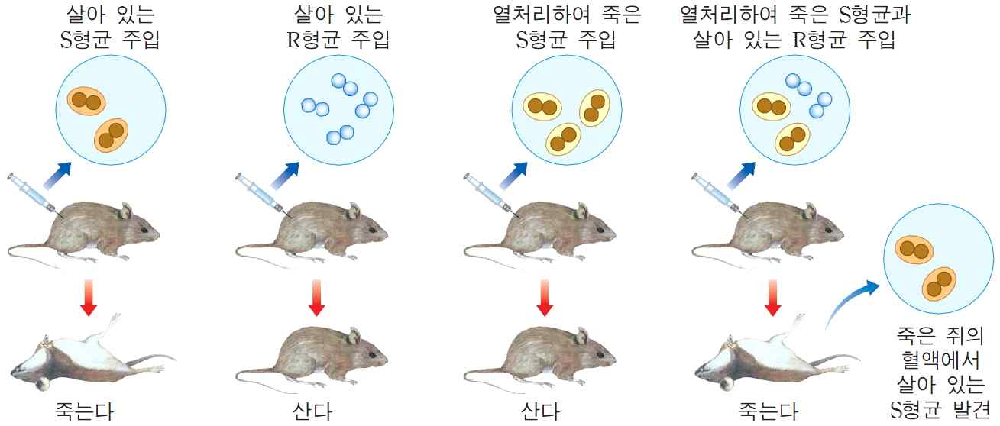

문제 3
다음은 폐렴 쌍구균인, 병원성을 나타내지 않는 R형균과 병원성을 나타내는 S형균을 생쥐에 주입하여 얻어진 실험 결과이다. 다음 물음에 답하시오. (100점)

(가) 열처리하여 죽은 S형균과 살아 있는 R형균을 함께 주입하는 경우, 생쥐가 죽는 이유에 대해서 설명하시오.(20점) 이 실험 결과를 바탕으로 폐렴 쌍구균을 구성하는 여러 물질 중, 어떤 물질이 유전물질인지 밝혀 낼 수 있는 추가 실험에 대해서 기술하시오.(30점) (총 50점)
(나) 이 추가 실험을 통해 밝혀진 유전 물질의 구성 요소(30점)와 구조(20점)에 대해서 설명하시오. (총 50점)